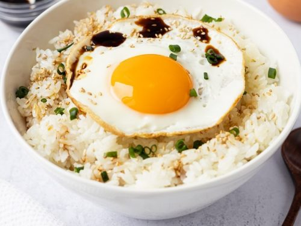

Soft Egg with Soy Sauce over Rice

Description
A simple, savory comfort dish consisting of a softly cooked egg, drizzled with soy sauce and chopped green onions, on a bed of hot white rice.
Ingredients
- One Egg
- Precooked/leftover rice
- Soy sauce (Lee Kum Kee seasoning soy preferred)
- Butter, optional
- Scallions, optional
Steps
- Take desired serving of rice and heat in microwave. Optional: lightly fry in pan with butter
- In a pan, heat oil and fry egg till underside of whites are solidified (1 min)
- Flip egg over to seal other side, making sure yolk is heated sufficiently and not cold inside
- Lay egg on top of rice, and drizzle with favorite soy sauce (LKK seasoning soy for extra umami)
- Optional: Sprinkle with chopped green onion
- Serve and eat hot!